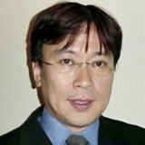

K2 顧問
茂野啓示 先生

K2 顧問
しげの けいじ
- 職種
- 歯科医師
- 所属
- 北山茂野歯科医院（院長） ↗
- 地域
- 京都府京都市北区（地下鉄烏丸線 北山駅）
米国補綴専門医 Dr. Raymond L. Kim に師事し、京都・北山で開院。歯周外科・補綴の著書を多く手がけ、東京SJCDのファウンダーとして約30年にわたり数百人をこえる歯科医師の技術指導にあたってきた。
ハンズオンコース講師：咬合理論と咬合器の基礎
経歴CAREER
- 1981岐阜歯科大学 卒業、同大学附属臨床研究所 助手
- Dr. Raymond L. Kim（米国補綴専門医）に師事
- 1989京都市で開院。スタディクラブ S.J.C.D.東京 ファウンダー・顧問
- 1998朝日大学歯学部 非常勤講師（〜2010年）
- 1998京都大学 再生医科学研究所 臓器再建応用分野 研究員
- 2000新潟大学歯学部 非常勤講師（〜2001年）
- 2003京都大学 博士（医学）
- 2005京都大学 再生医科学研究所 臓器再建応用分野 講師
役職・所属学会AFFILIATIONS
役職
- K2 顧問
- S.J.C.D.東京（東京SJCD）ファウンダー・顧問
- SJCDインターナショナル 常任理事
- スタディクラブ K.I.M. 顧問
- 北山臨床研究会 最高顧問
- 3i インプラント 公認インストラクター
所属学会
- 米国歯周病学会
- 日本補綴歯科学会
- 日本歯周病学会
- 日本人工臓器学会
- 欧州再生学会
- 日本炎症再生学会
- 日本マイクロサージャリー学会
- 日本末梢神経学会
著書・講演・受賞などACTIVITIES
- 著書『一から学ぶ歯周外科の手技』（医歯薬出版、1996年）、『新・一から学ぶ歯周外科の手技』（医歯薬出版）。
- 共著『臨床を変える支台歯形成』1・2（2000年・2001年）、『ボンディング・レストレーション』（2002年）、『Ultimate guide Implants』（2003年）、歯界展望別冊『Practical Occlusal Adjustment and Function 実践 咬合調整テクニック』、歯科技工別冊『ポンティック』、『一から学ぶスケーリング・ルートプレーニング』ほか。
- 補綴臨床・歯科技工などに論文多数。
北山茂野歯科医院についてCLINIC
一般歯科のほか、歯周治療、インプラント、審美治療、咬合治療、矯正（インビザライン等）、口腔外科まで歯科治療全般を行う。口腔の機能回復には全分野にわたる技術と知識が必要という考えのもと、審美と機能の両立を目指した診査・設計・治療を行っている。
- 治療前の正確な診査・診断と、修復物・インプラントの綿密な設計を重視している
- 時間をかけて体の反応を見ながら治療を進め、経過観察を大切にしている
- インプラントや歯周病の治療後は、一人ひとりに合わせたメインテナンスを続ける
経歴は所属先の公式サイトなど公開情報をもとに掲載しています。